Do 8 osób Klimatyzacja
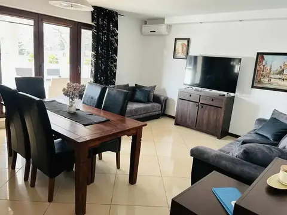
Apartamenty w Stegnie, wśród sosnowego lasu. 1500 m od plaży.
Cztery klimatyzowane apartamenty z własnym tarasem, aneksem kuchennym i dwiema niezależnymi łazienkami w większych lokalach.

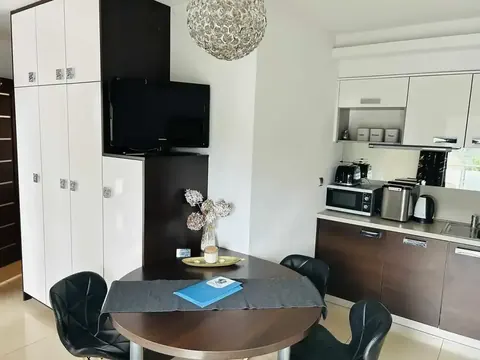
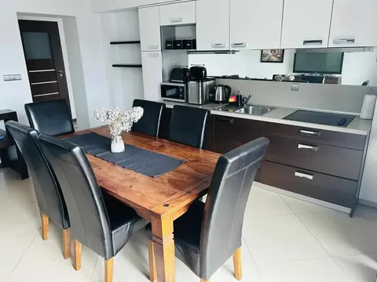
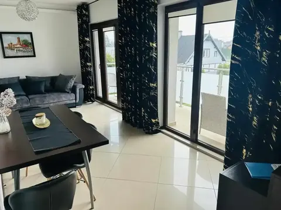
Kameralne lokale dostępne w sezonie letnim — świetna opcja dla par i małych rodzin szukających prostego, wygodnego noclegu blisko morza.
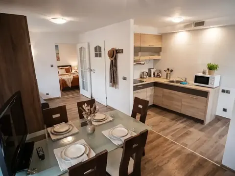
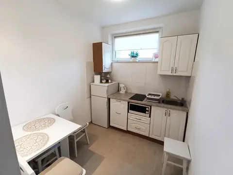
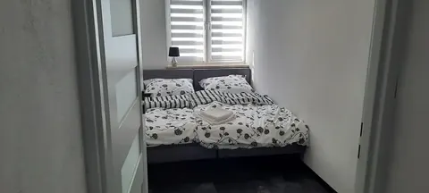
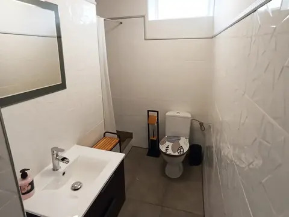
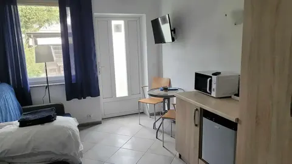
Dodatkowe pokoje letnie z własnymi łazienkami — dobra opcja na prosty, ekonomiczny nocleg blisko morza.
Każdy pokój letni ma niezależną łazienkę — bez dzielenia z innymi gośćmi.
1500 m od plaży, w tym samym miejscu co pozostałe apartamenty Zatoki Cydrowej.
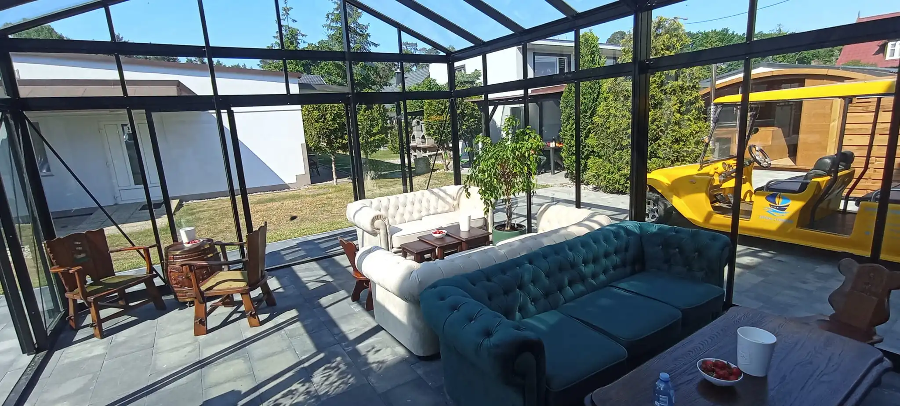
Przeszklona, zadaszona weranda z wygodnymi sofami — miejsce, gdzie można usiąść z kawą niezależnie od pogody, tuż obok trawnika i zieleni otaczającej budynek.
Komora hiperbaryczna, sauna i solarium — dostępne także poza sezonem letnim.
Wspomaga regenerację organizmu i szybszy powrót do formy po wysiłku.
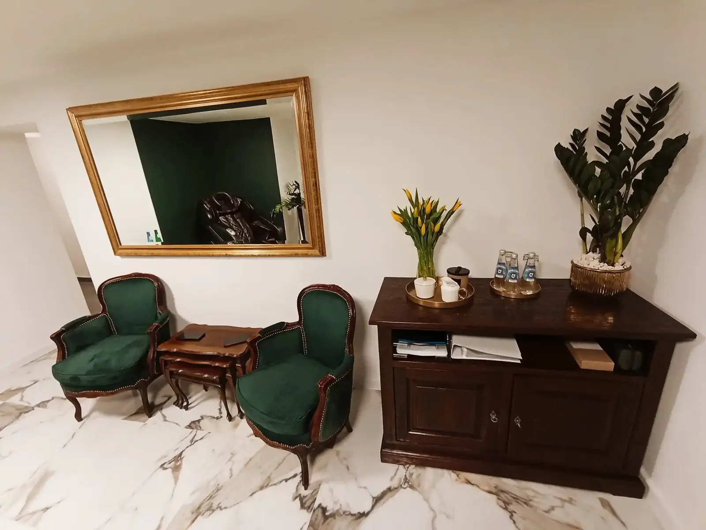
Relaks po dniu na plaży i wsparcie regeneracji mięśni.
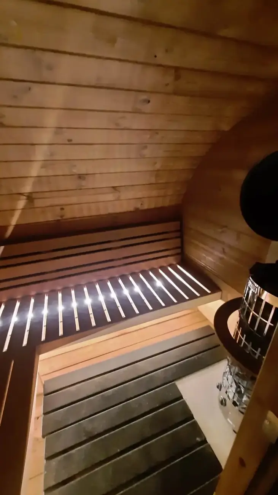
Dostępne na miejscu, niezależnie od pogody za oknem.
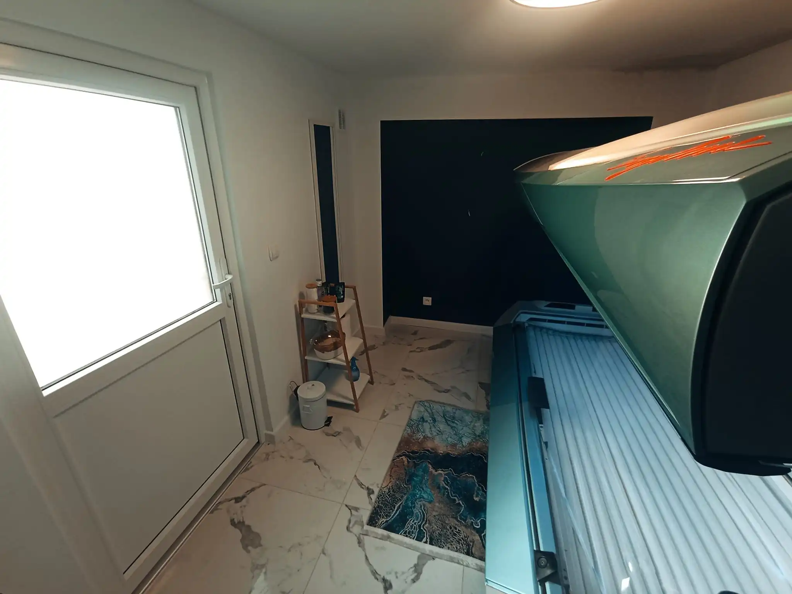

Plac zabaw w ogrodzie i kameralna sala zabaw na deszczowe dni — tak, żeby dzieci miały co robić niezależnie od pogody.
Kameralna, bezpieczna przestrzeń na deszczowe dni.
Dzieci bezpiecznie bawią się na świeżym powietrzu, rodzice mogą odpocząć na tarasie.
Obiekt leży w spokojnej, zalesionej części Stegny — 1500 metrów od piaszczystej plaży Bałtyku, z łatwym dojazdem do okolicznych atrakcji Żuław i Mierzei Wiślanej.
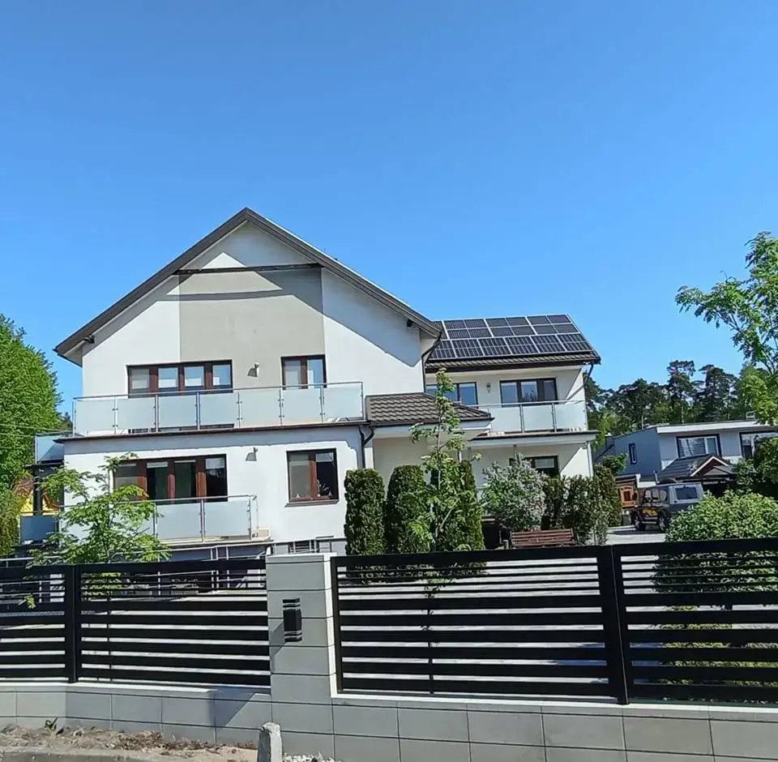
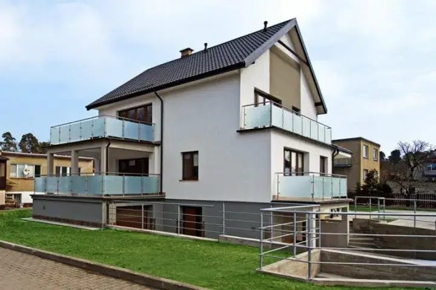
Prawdziwe opinie naszych gości z Facebooka.
„Pobyt w Zatoce Cydrowej był wspaniały. Obiekt jest super, położony w spokojnym miejscu, idealnym na odpoczynek. Gospodarze są fantastyczni — bardzo serdeczni i pomocni, dzięki czemu od razu można poczuć się jak u siebie. Ogromnym atutem jest relaks w jacuzzi, który był świetnym dopełnieniem wypoczynku. Zdecydowanie polecam to miejsce każdemu, kto szuka spokoju, komfortu i miłej atmosfery. Na pewno jeszcze tu wrócimy!”
„Do tego opalenizna z solarium, gorący powiew z sauny — człowiek od razu zapomina, że nad Bałtykiem właśnie pada. Dzieci mają tutaj swój raj — bilard, kino i plac zabaw sprawiają, że każdy znajdzie coś dla siebie. A wszystko to w atmosferze, która jest naprawdę domowa, ciepła i pełna serdeczności. Ogromne podziękowania dla Klaudii i Łukasza — to prawdziwi ludzie o wielkich serduchach. Zatoka Cydrowa — zdecydowanie miejsce, do którego chce się wracać!”
„Jeśli szukacie idealnego miejsca na odpoczynek nad morzem, to Zatoka Cydrowa jest strzałem w dziesiątkę. Gwarancja relaksu na najwyższym poziomie. Pokoje lśnią czystością, są urządzone ze smakiem i bardzo przytulne. Właściciele i Gospodarze to niezwykle ciepli, pomocni i mega pozytywnie zakręceni ludzie, którzy dbają o każdy szczegół i sprawiają, że człowiek czuje się jak w domu. Rewelacyjne miejsce, do którego jeszcze nie raz wrócimy.”
Ok. 1500 m pieszo od piaszczystej plaży w Stegnie.
Tak, zwierzęta domowe są mile widziane we wszystkich apartamentach.
Tak, na terenie obiektu jest duży, monitorowany i bezpieczny parking.
Tak, komora hiperbaryczna, sauna i solarium są dostępne dla gości przez cały rok.
Tak, wszystkie cztery apartamenty całoroczne są klimatyzowane.
Sprawdźcie dostępność telefonicznie — odpowiemy na wszystkie pytania o apartamenty i termin przyjazdu.